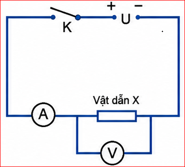
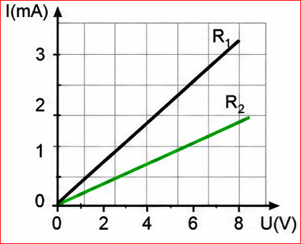
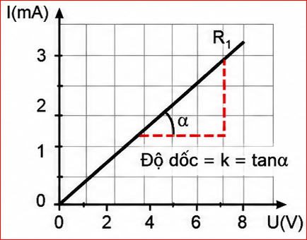
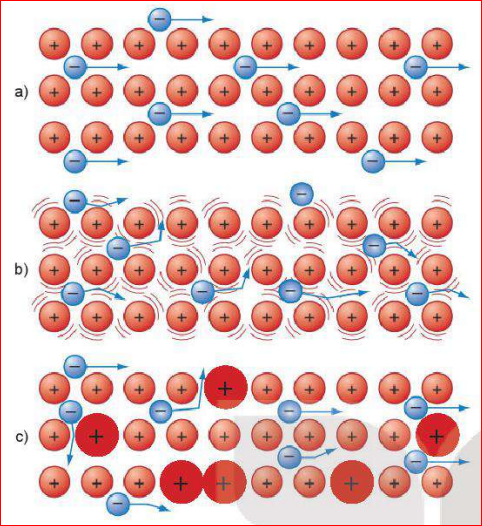
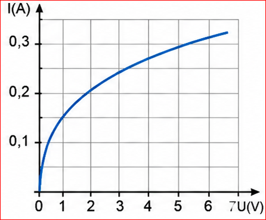
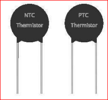
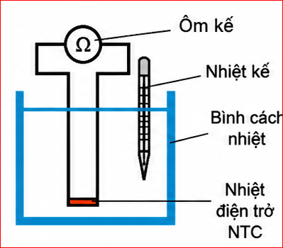
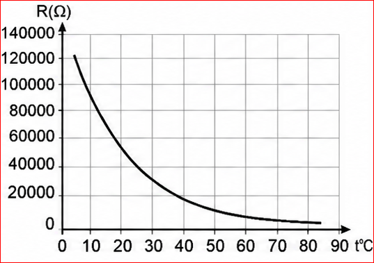
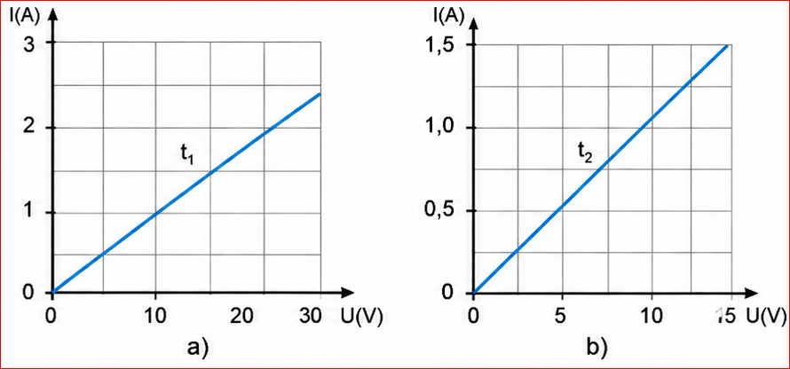
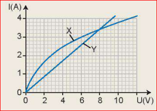

Chuẩn bị:

Hình 23.1. Sơ đồ thí nghiệm đo cường độ dòng điện và hiệu điện thế ứng với các vật dẫn khác nhau
Tiến hành:
| Vật dẫn X | Vật dẫn Y | |
|---|---|---|
| U (V) | \(I_1\) (mA) | \(I_2\) (mA) |
| ? | ? | ? |
| ? | ? | ? |
| ? | ? | ? |
1. Hãy nhận xét về tỉ số \( \frac{U}{I} \) đối với từng vật dẫn X và vật dẫn Y.
2. Đối với hai vật dẫn X và vật dẫn Y thì tỉ số \( \frac{U}{I} \) có khác nhau không?
3. Nếu đặt cùng một hiệu điện thế vào hai đầu vật dẫn X và vật dẫn Y thì cường độ dòng điện chạy qua vật dẫn nào có giá trị nhỏ hơn?
Trả lời:
1. Đối với mỗi vật dẫn X hoặc Y, tỉ số \( \frac{U}{I} \) có giá trị không đổi (là một hằng số).
2. Đối với hai vật dẫn X và Y khác nhau thì tỉ số \( \frac{U}{I} \) là khác nhau.
3. Nếu đặt cùng một hiệu điện thế \( U \), vật dẫn nào có tỉ số \( \frac{U}{I} \) lớn hơn thì cường độ dòng điện \( I \) chạy qua nó sẽ nhỏ hơn và ngược lại.
Từ kết quả tính tỉ số \( \frac{U}{I} \) của thí nghiệm ở trên cho thấy, ứng với mỗi vật dẫn thì tỉ số \( \frac{U}{I} \) là một hằng số.
Kí hiệu hằng số trên là R, ta có: \( R = \frac{U}{I} \Rightarrow I = \frac{U}{R} \) (23.1)
Biểu thức (23.1) cho thấy với cùng một hiệu điện thế, R càng lớn thì cường độ dòng điện I càng nhỏ. Điều này chứng tỏ vật dẫn đã cản trở sự dịch chuyển của các điện tích trong dây dẫn càng lớn.
Điện trở của dây dẫn được kí hiệu là R (R là chữ cái đầu của từ tiếng Anh Resistance - cản trở).
Trong công thức (23.1), hiệu điện thế U đo bằng vôn, cường độ dòng điện I đo bằng ampe thì điện trở đo bằng ohm (ôm), kí hiệu là \( \Omega \).
\( 1 \Omega = \frac{1 V}{1 A} \)
Một số bội số của ôm:
| Điện trở \( R_1 \) | Điện trở \( R_2 \) | |
|---|---|---|
| U (V) | \( I_1 \) (mA) | \( I_2 \) (mA) |
| 0,00 | 0,00 | 0,00 |
| 1,0 | 0,43 | 0,21 |
| 2,0 | 0,86 | 0,43 |
| 4,0 | 1,73 | 0,87 |
| 6,0 | 2,60 | 1,31 |
| 8,0 | 3,45 | 1,75 |
Đường đặc trưng vôn - ampe là đồ thị biểu diễn sự phụ thuộc giữa hiệu điện thế đặt vào và dòng điện chạy qua linh kiện đang xét.
Bảng 23.2 là kết quả thí nghiệm đối với hai điện trở \( R_1 \) và \( R_2 \) theo thí nghiệm ở Mục 1. Từ bảng số liệu ta vẽ được đường đặc trưng vôn - ampe của hai điện trở \( R_1 \) và điện trở \( R_2 \) như Hình 23.2.

Hình 23.2. Đường đặc trưng vôn-ampe của hai điện trở \( R_1 \) và \( R_2 \)
Từ đường đặc trưng vôn - ampe ở Hình 23.2, ta thấy đồ thị là một đường thẳng, U tăng thì I cũng tăng. Như vậy đường đặc trưng vôn - ampe của điện trở là hàm bậc nhất xuất phát từ gốc toạ độ, ta có công thức:
\( I = kU \) (23.2)
với \( k = \frac{1}{R} \) là hằng số không đổi gọi là độ dẫn điện.
Trường hợp đơn giản nhất là đặc trưng vôn – ampe của một điện trở R. Từ công thức \( I = \frac{U}{R} \), đường đặc trưng vôn - ampe là đường thẳng đi qua gốc toạ độ, có độ dốc càng lớn khi điện trở R càng nhỏ (Hình 23.3).

Hình 23.3. Đường đặc trưng vôn-ampe của điện trở R
1. Đường đặc trưng vôn-ampe của điện trở có đặc điểm gì? Đặc điểm này nói lên điều gì về mối quan hệ giữa hiệu điện thế U và cường độ dòng điện I.
2. Độ dốc của đường đặc trưng vôn-ampe của điện trở liên quan đến điện trở như thế nào?
Trả lời:
1. Đường đặc trưng vôn - ampe của điện trở là một đường thẳng đi qua gốc toạ độ. Đặc điểm này cho thấy cường độ dòng điện \( I \) tỉ lệ thuận với hiệu điện thế \( U \) đặt vào hai đầu điện trở.
2. Độ dốc của đồ thị \( k = \tan(\alpha) = \frac{1}{R} \). Do đó, độ dốc của đường đặc trưng vôn - ampe tỉ lệ nghịch với điện trở. Độ dốc càng lớn thì điện trở R càng nhỏ và ngược lại.
Mối quan hệ giữa hiệu điện thế U, cường độ dòng điện I và điện trở R của vật dẫn kim loại đã được nhà bác học người Đức Georg Simon Ohm (1789-1854) xác định bằng thực nghiệm và phát biểu thành định luật, gọi là định luật Ohm:
Định luật Ohm:
Cường độ dòng điện chạy qua vật dẫn kim loại tỉ lệ thuận với hiệu điện thế ở hai đầu vật dẫn, tỉ lệ nghịch điện trở của vật dẫn.
\( I = \frac{U}{R} \) (23.3)
trong đó:
Trong kim loại, các nguyên tử bị mất electron hoá trị trở thành các ion dương. Các ion dương liên kết với nhau một cách trật tự tạo nên mạng tinh thể kim loại. Chuyển động nhiệt của các ion có thể phá vỡ trật tự này. Nhiệt độ càng cao dao động nhiệt càng mạnh, mạng tinh thể càng trở nên mất trật tự. Sự mất trật tự của mạng tinh thể cản trở chuyển động của electron tự do, là nguyên nhân gây ra điện trở của kim loại (Hình 23.4).

Hình 23.4. Mô hình nguyên nhân gây ra điện trở trong kim loại
a) Ở nhiệt độ thấp; b) Ở nhiệt độ cao; c) Do nguyên tử tạp chất.
Vận dụng công thức \( I = Snve \) để giải thích tại sao điện trở R của vật dẫn kim loại lại phụ thuộc vào chiều dài \( l \), tiết diện S và điện trở suất \( \rho \) của dây theo công thức \( R = \frac{\rho l}{S} \)
Trả lời:
Theo công thức \( I = Snve \), ta có \( v = \frac{I}{Sne} \). Vận tốc trôi \( v \) cũng phụ thuộc vào điện trường \( E \), với \( E = \frac{U}{l} \). Sự cản trở chuyển động của electron (điện trở suất \( \rho \)) làm giảm vận tốc trôi.
Kết hợp với định luật Ohm \( I = \frac{U}{R} \), ta có thể rút ra mối liên hệ tỉ lệ thuận của R với chiều dài dây \( l \) (càng dài va chạm càng nhiều), tỉ lệ nghịch với tiết diện S (đường đi rộng hơn) và phụ thuộc bản chất vật liệu \( \rho \).
a) Điện trở của đèn sợi đốt
Dòng điện chạy qua điện trở có tác dụng làm nóng điện trở. Nguyên lí này này được sử dụng trong các bộ phận sưởi ấm, và cả trong dây tóc của bóng đèn sợi đốt. Hiệu ứng đốt nóng xảy ra do các electron va chạm với các nguyên tử. Khi electron chạy qua một vật dẫn điện, electron bị mất năng lượng. Các nguyên tử thu được năng lượng và dao động nhanh hơn. Sự dao động xảy ra nhanh hơn có nghĩa là nhiệt độ cao hơn.

Hình 23.5. Đường đặc trưng vôn-ampe của điện trở dây tóc bóng đèn
Dòng điện chạy qua dây tóc của bóng đèn sinh nhiệt, làm cho dây tóc nóng lên do đó điện trở của dây tóc thay đổi trong quá trình khảo sát. Khi dòng điện và hiệu điện thế nhỏ, đường đặc trưng vôn-ampe gần đúng là đường thẳng. Ở hiệu điện thế cao hơn, đường đặc trưng bắt đầu cong (Hình 23.5). Điều này cho thấy rằng điện trở của dây tóc bóng đèn tăng lên vì tỉ số \( \frac{U}{I} \) tăng lên.
Trên đường đặc trưng, khi dây tóc bóng đèn phát sáng thì đường đặc trưng có độ dốc nhỏ nên điện trở lớn. Do vậy, ta thấy điện trở của dây tóc bóng đèn phụ thuộc vào nhiệt độ.
b) Điện trở nhiệt
Điện trở nhiệt (thermistor) là linh kiện có điện trở thay đổi một cách rõ rệt theo nhiệt độ. Điện trở nhiệt được ứng dụng rộng rãi trong kĩ thuật điện tử, làm cảm biến nhiệt (Hình 23.6).
Để khảo sát sự phụ thuộc của nhiệt điện trở NTC vào nhiệt độ người ta làm thí nghiệm như sau:

Hình 23.6. Điện trở nhiệt

Hình 23.7. Sơ đồ thí nghiệm

Hình 23.8. Đường đặc trưng của nhiệt điện trở NTC theo nhiệt độ
Ngoài nhiệt điện trở NTC, trong thực tế còn có loại nhiệt điện trở PTC (Positive Temperature Coefficient). Điện trở của nhiệt điện trở PTC tăng khi nhiệt độ tăng.
Từ kết quả thí nghiệm em rút ra nhận xét gì về sự phụ thuộc của nhiệt điện trở NTC vào nhiệt độ?
Trả lời:
Dựa vào đồ thị Hình 23.8, ta thấy đối với nhiệt điện trở NTC (Negative Temperature Coefficient), khi nhiệt độ tăng thì điện trở của nó giảm mạnh.
Bài tập 1:
Hai đồ thị trong Hình 23.9a, b mô tả đường đặc trưng vôn - ampe của một dây kim loại ở hai nhiệt độ khác nhau \( t_1 \) và \( t_2 \)

Hình 23.9
a) Tính điện trở của dây kim loại ứng với mỗi nhiệt độ \( t_1 \) và \( t_2 \).
b) Dây kim loại ở đồ thị nào có nhiệt độ cao hơn?
Giải chi tiết:
a) Từ đồ thị Hình 23.9a (nhiệt độ \( t_1 \)): Lấy điểm \( U = 30V \), \( I = 2.4A \) (ước lượng từ đồ thị).
\( R_1 = \frac{U}{I} = \frac{30}{2.4} = 12.5 \, \Omega \)
Từ đồ thị Hình 23.9b (nhiệt độ \( t_2 \)): Lấy điểm \( U = 15V \), \( I = 1.5A \).
\( R_2 = \frac{U}{I} = \frac{15}{1.5} = 10 \, \Omega \)
b) Ta có \( R_1 > R_2 \). Vì điện trở của kim loại tăng khi nhiệt độ tăng, nên \( t_1 > t_2 \). Dây kim loại ở đồ thị a) có nhiệt độ cao hơn.
Bài tập 2:
Đồ thị Hình 23.10 thể hiện đường đặc trưng vôn-ampe của hai linh kiện là dây tóc bóng đèn và dây kim loại.

Hình 23.10
a) Xác định đường nào là của dây tóc bóng đèn, đường nào là của dây kim loại.
b) Xác định hiệu điện thế mà tại đó dây tóc bóng đèn và dây kim loại có điện trở như nhau.
c) Xác định điện trở ứng với hiệu điện thế xác định được ở câu b.
Giải chi tiết:
a) Dây kim loại (nhiệt độ không đổi hoặc tăng rất ít) có đặc trưng là đường thẳng \( \Rightarrow \) Đường X là dây kim loại.
Dây tóc bóng đèn nóng lên nhiều, điện trở tăng làm đồ thị cong xuống \( \Rightarrow \) Đường Y là của dây tóc bóng đèn.
b) Hai linh kiện có điện trở như nhau khi tỉ số \( U/I \) bằng nhau, tức là điểm giao nhau của hai đồ thị. Giao điểm nằm ở tọa độ \( U \approx 8V \).
c) Tại \( U = 8V \), ta dóng sang trục tung thấy cường độ dòng điện \( I \approx 3.2A \).
Điện trở tại điểm đó là: \( R = \frac{U}{I} = \frac{8}{3.2} = 2.5 \, \Omega \).
Hiện tượng siêu dẫn là hiện tượng một số kim loại và hợp kim khi nhiệt độ thấp hơn một nhiệt độ tới hạn \( T_c \) thì điện trở của nó đột ngột giảm xuống bằng 0.
Khi vật dẫn ở trạng thái siêu dẫn, điện trở của nó gần bằng 0. Vì vậy, nếu trong một vòng dây siêu dẫn có dòng điện chạy qua thì dòng điện này có thể duy trì rất lâu, sau khi bỏ nguồn điện đi. Các vật siêu dẫn có nhiều ứng dụng trong thực tế. Người ta chế tạo ra những nam châm điện có cuộn dây bằng vật liệu siêu dẫn, có thể tạo ra từ trường mạnh trong thời gian dài mà không hao phí năng lượng vì toả nhiệt.
| Vật liệu | \( T_c \) (K) |
|---|---|
| Thuỷ ngân | 4,15 |
| Kẽm | 0,85 |
| Nhôm | 1,19 |
| Chì | 7,19 |
| \( Nb_3Sn \) | 18 |
| \( Nb_3Ge \) | 23 |
Câu 1: Đại lượng đặc trưng cho mức độ cản trở dòng điện của vật dẫn là gì?
Câu 2: Biểu thức đúng của định luật Ohm là?
Câu 3: Đơn vị của điện trở là gì?
Câu 4: Khi nhiệt độ của dây dẫn kim loại tăng thì điện trở của nó thay đổi như thế nào?
Câu 5: Đường đặc trưng vôn - ampe của điện trở kim loại ở nhiệt độ không đổi có dạng là gì?
Câu 1: Đặt vào hai đầu điện trở \( R = 24 \, \Omega \) một hiệu điện thế \( U = 12 \, V \). Tính cường độ dòng điện chạy qua điện trở đó.
Giải:
Áp dụng định luật Ohm: \( I = \frac{U}{R} \)
Thay số: \( I = \frac{12}{24} = 0,5 \, (A) \)
Vậy cường độ dòng điện là 0,5 A.
Câu 2: Khi đặt hiệu điện thế \( U = 6 \, V \) vào hai đầu một vật dẫn thì cường độ dòng điện chạy qua là \( I = 0,2 \, A \). Tính điện trở của vật dẫn.
Giải:
Từ biểu thức định luật Ohm, ta có: \( R = \frac{U}{I} \)
Thay số: \( R = \frac{6}{0,2} = 30 \, (\Omega) \)
Vậy điện trở của vật dẫn là \( 30 \, \Omega \).
Câu 3: Một dây đồng có điện trở \( 10 \, \Omega \) ở nhiệt độ \( 20^\circ C \). Tính điện trở của dây đồng này ở \( 50^\circ C \). Biết hệ số nhiệt điện trở của đồng là \( \alpha = 4,3 \cdot 10^{-3} \, K^{-1} \).
Giải:
Áp dụng công thức sự phụ thuộc điện trở vào nhiệt độ: \( R = R_0[1 + \alpha(t - t_0)] \)
Thay các giá trị: \( R_0 = 10 \, \Omega \), \( t = 50^\circ C \), \( t_0 = 20^\circ C \), \( \alpha = 4,3 \cdot 10^{-3} \)
\( R = 10 \cdot [1 + 4,3 \cdot 10^{-3} \cdot (50 - 20)] \)
\( R = 10 \cdot [1 + 4,3 \cdot 10^{-3} \cdot 30] = 10 \cdot [1 + 0,129] = 10 \cdot 1,129 = 11,29 \, (\Omega) \)
Vậy điện trở ở \( 50^\circ C \) là \( 11,29 \, \Omega \).